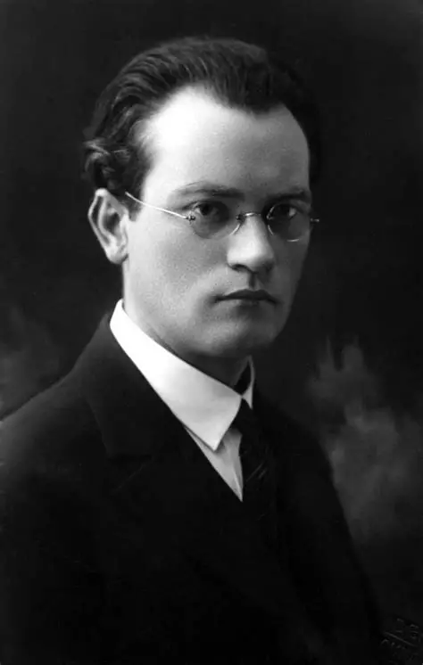
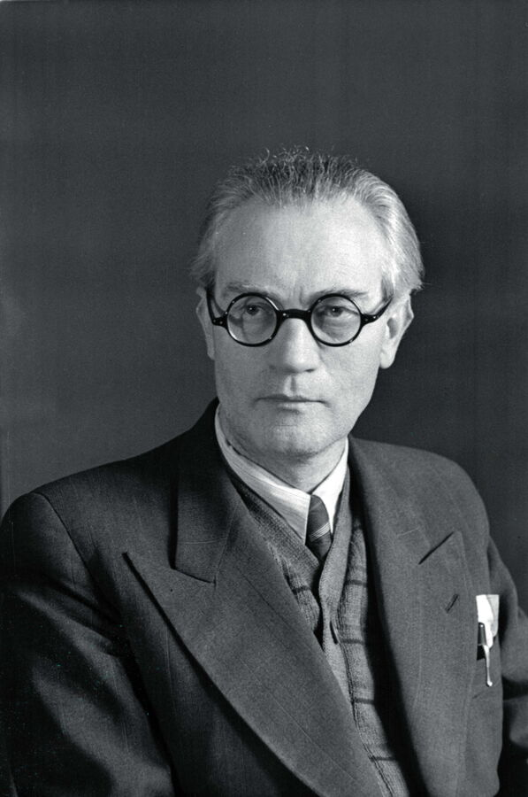
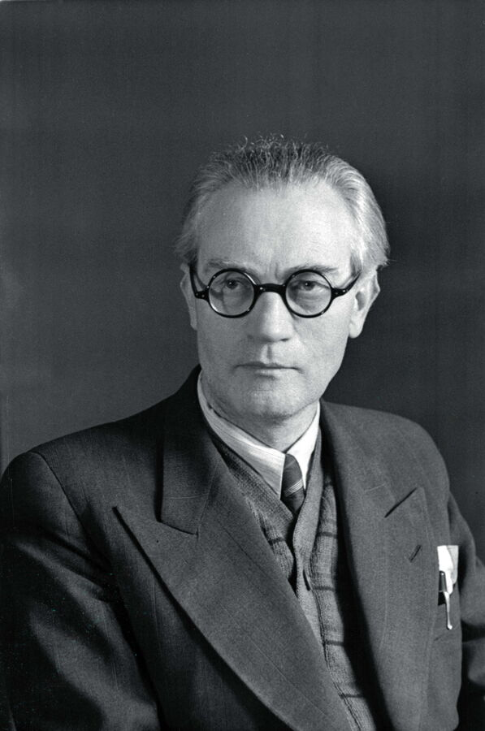

Vincas Mykolaitis-Putinas
Gimimo data: 1893 m. sausio 6 d.
Mirties data: 1967 m. birželio 7 d.
Regionas: Marijampolės apskritis
Žanras: Romanas, poezija, drama
Trumpa biografija
Vincas Mykolaitis-Putinas buvo vienas žymiausių XX a. Lietuvos rašytojų, poetas, prozininkas, dramaturgas ir literatūros mokslininkas. Jo garsiausias kūrinys — romanas „Altorių šešėly“, kuriame nagrinėjama dvasinė žmogaus kova tarp pašaukimo ir pareigos. Putino kūryba žymi lietuvių modernizmo pradžią.

 
